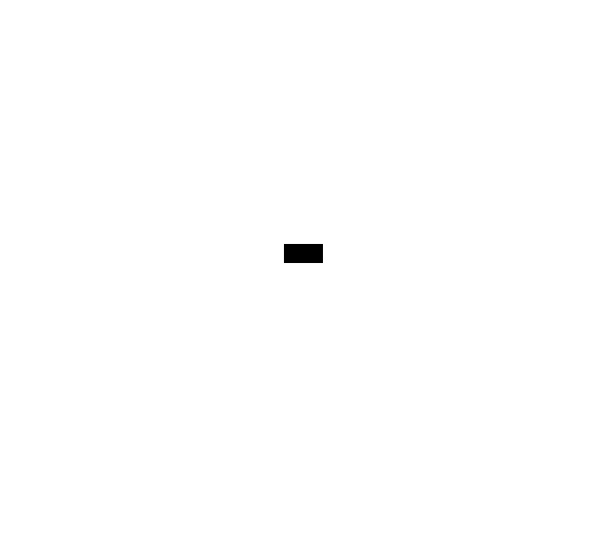
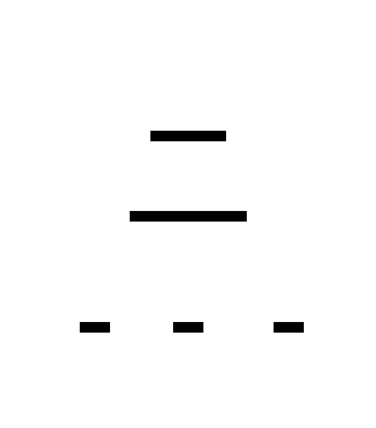
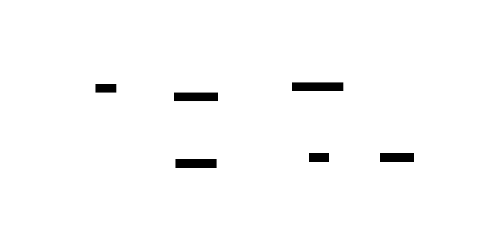

cppproptest¶

cppproptest is a property-based testing library for C++. It focuses on usability with features included:
- Out-of-box generators for primitives and standard containers
- Set of powerful generator combinators for creating new generators from existing generators
- Shrinking capability for quickly finding root cause of a failure and automated debugging support
- Stateful testing support for testing state changes
- Concurrency testing support for testing concurrent state changes
You can get started with cppproptest on this page.
Why Property-based Testing?¶
Generalization and Abstraction¶
Property-based testing lets you write tests using abstract ideas, instead of introducing some dummy examples or overly contrived scenarios. You can write tests focusing on specification or requirements of the tested components.
Clear Separation of Variants and Invariants¶
In reality, we often mix variants and invariants in our tests under typical example-based tests. This is one of the reasons why those tests become hard to maintain and difficult to read over time. Let's see following example-based test for an encoder and a decoder:
// a text encoded and then decoded must be identical to original
MyEncoder encoder;
MyDecoder decoder;
auto encodedMsg = encoder.encode("Some dummy content that hopefully prove or disprove this works");
auto decodedMsg = decoder.decode(encodedMsg);
ASSERT_EQ("Some dummy content that hopefully prove or disprove this works", decodedMsg);
Even a simple test like this is confusing, as some dummy string value seems like as if it's playing a significant role in the test but in fact it isn't. Turning this dummy value to a free variable would lead to greater generalization of the test:
[](std::string originalMsg) {
// a text encoded and then decoded must be identical to originalMsg
MyEncoder encoder;
MyDecoder decoder;
auto encodedMsg = encoder.encode(originalMsg);
auto decodedMsg = decoder.decode(encodedMsg);
PROP_ASSERT_EQ(originalMsg, decodedMsg);
};
The new free variable originalMsg becomes the variant part (input domain) of the test while the rest becomes the invariant part.
In order to turn this into a concrete test run, we can feed in some random values for the free variable originalMsg. This can be achieved by enclosing this function with forAll() function, which calls the given test function many times with some randomly generated values for the free variable originalMsg:
forAll([](std::string originalMsg) {
// a text encoded and then decoded must be identical to original
MyEncoder encoder;
MyDecoder decoder;
auto encodedMsg = encoder.encode(originalMsg);
auto decodedMsg = decoder.decode(encodedMsg);
PROP_ASSERT_EQ(originalMsg, decodedMsg);
});
As a result, forAll() will test the encoder and decoder against arbitrary input strings, by calling the property function hundreds of times (200 is the default number of runs) with some random strings, instead of relying on a dummy value. This let's you validate the property with various forms of originalMsg.
With this approach, our test becomes more readable, gets easier to maintain, and carries test writer's intention better.
Convenience and Versatility¶
Property-based testing often provides with the convenient out-of-box generators and generator combinators (that can make new generators out of existing ones), and lets you to effortlessly define an input domain tailored for your test. You can specify your input domain using various notions - range, constraint, union, transformation, composition, and dependency, just to name a few.
Following example shows how certain input domain of string type can be specified using a built-in generator and generator combinators:

// a tailored string generator
auto stringGen = Arbitrary<int>()
.filter([] (int& num) { return num % 2 == 0; }) // even numbers only
.map([] (int& num) {
return "<" + std::to_string(numStr) + ">"; // string like "<0>", ..., "<n>"
});
// property
forAll([](std::string original) {
// ... //
}, stringGen);
The forAll function automatically identifies parameter types of the given property function. This automation allows any number of parameters of simple or complex types to be used to define a property-based test:

It then automatically feeds in the randomly generated values of those types to call the given function multiple times. With this powerful generation engine, we can fully parameterize and randomize our tests with high flexibility but with much less effort.
You don't need to care too much about how to test your requirements. Most of it is automatically done for you by the framework, letting you to focus on what to test.
Further Topics and Details:¶
- Getting Started with cppproptest
- Introduction to generators
- Generator combinators for creating generators from existing ones
- Counterexamples and notion of shrinking for automated debugging
- Printing facilities
- Stateful testing with
cppproptest - Concurrency testing with
cppproptest - Advanced mocking with
cppproptest(work in progress)